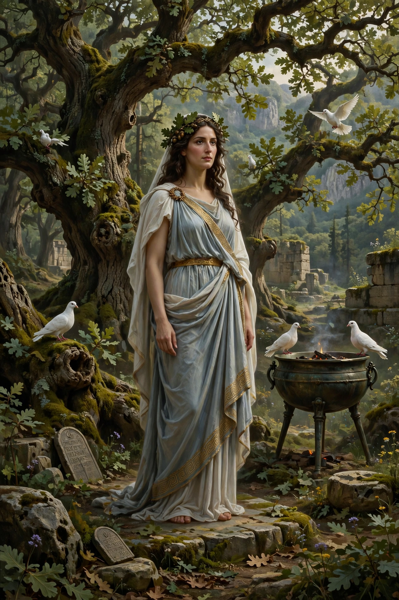

| Parents | Oceanus and Tethys, or Uranus and Gaia |
|---|---|
| Consort | Zeus |
| Offspring | Aphrodite (in Homer) |
| Cult centre | Dodona |

Dione (Ancient Greek: Διώνη, Diṓnē, "divine one") is an ancient Greek goddess, best known from Homer's Iliad, where she is the mother of Aphrodite by Zeus. Her name is the feminine form of Zeus (Dios), and she is generally understood to have originally been his consort before Hera took that role in the standard Olympian genealogy.
In Book 5 of the Iliad, Aphrodite, wounded in battle by the hero Diomedes, flees to Mount Olympus and is comforted by her mother Dione, who heals her wound and recounts the sufferings of other gods at mortal hands. Hesiod, by contrast, lists Dione among the Oceanids, the daughters of Oceanus and Tethys, while other sources make her a Titaness, daughter of Uranus and Gaia.
Dione was worshipped alongside Zeus at the oracle of Dodona in Epirus, one of the oldest oracular shrines in Greece, where the god's will was interpreted from the rustling of a sacred oak. Lead tablets from Dodona show petitioners addressing Zeus and Dione together. In some traditions Aphrodite herself bears the epithet "Dionaea", and the Roman goddess Diana's name derives from the same root.
See also: Uranus · Twelve Olympians · Astarte